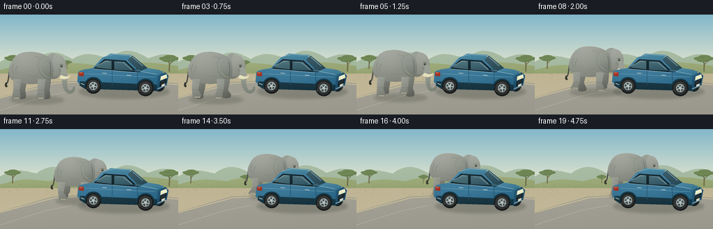
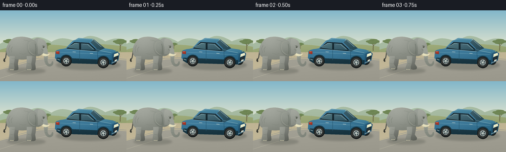

CODING AGENTS AS PIXEL WORLD MODELS
traex/GPT-6.1-Sol · dynamic_spatial_relationship_0063
点击播放 · 原生 RGB 像素
逐轮保存的候选
回放视频、检查图与代码变化。
每份候选均可单独播放。实际图片检查记录在下方工具轨迹中。
候选 01播放与检查图
点击播放 · 原生 RGB 像素


展开代码变化
--- 上一保存版本
+++ 本次保存版本
@@ -0,0 +1,251 @@
+"""Deterministic, supersampled RGB animation using only PIL/numpy geometry."""
+from pathlib import Path
+import json, math
+import numpy as np
+from PIL import Image, ImageDraw, ImageFilter
+from artifact_io import save
+
+ROOT = Path(__file__).resolve().parent
+SPEC = json.loads((ROOT / 'task_spec.json').read_text())
+S = 4
+W, H = SPEC['width'], SPEC['height']
+RNG = np.random.default_rng(12)
+
+def bezier_path(commands):
+ pts = [commands[0]]
+ p = commands[0]
+ for c in commands[1:]:
+ if len(c) == 2:
+ pts.append(c); p = c
+ else:
+ a, b, e = c[:2], c[2:4], c[4:6]
+ for t in np.linspace(0, 1, 20)[1:]:
+ q = 1-t
+ pts.append((q*q*q*p[0]+3*q*q*t*a[0]+3*q*t*t*b[0]+t*t*t*e[0],
+ q*q*q*p[1]+3*q*q*t*a[1]+3*q*t*t*b[1]+t*t*t*e[1]))
+ p = e
+ return pts
+
+class Painter:
+ def __init__(self, size, origin=(0,0), transparent=True):
+ self.origin = origin
+ self.im = Image.new('RGBA', (round(size[0]*S),round(size[1]*S)), (0,0,0,0))
+ self.draw = ImageDraw.Draw(self.im)
+ self.yy, self.xx = np.mgrid[:self.im.height,:self.im.width].astype(np.float32)
+ self.noise = RNG.normal(0,1,(self.im.height,self.im.width)).astype(np.float32)
+ def xy(self,p): return ((p[0]+self.origin[0])*S,(p[1]+self.origin[1])*S)
+ def line(self, points, color, width=1, curve=False):
+ p = bezier_path(points) if curve else points
+ pp = [self.xy(q) for q in p]
+ self.draw.line(pp, fill=color, width=max(1,round(width*S)), joint='curve')
+ def polygon(self,pts,color): self.draw.polygon([self.xy(p) for p in pts],fill=color)
+ def shape(self,commands,base, light=20, texture=.7, glow=None):
+ self.fill_mask(bezier_path(commands),base,light,texture,glow)
+ def fill_mask(self,pts,base,light=20,texture=.7,glow=None):
+ mask=Image.new('L',self.im.size)
+ d=ImageDraw.Draw(mask); d.polygon([self.xy(q) for q in pts],fill=255)
+ box=mask.getbbox()
+ if not box:return
+ x0,y0,x1,y1=box
+ yy=self.yy[y0:y1,x0:x1]; xx=self.xx[y0:y1,x0:x1]
+ f=light*(.6-(yy-y0)/max(1,y1-y0)) + light*.28*(.5-(xx-x0)/max(1,x1-x0))
+ if glow:
+ gx,gy,rad,amp=glow
+ gx,gy=self.xy((gx,gy))
+ f+=amp*np.exp(-((xx-gx)**2+(yy-gy)**2)/(2*(rad*S)**2))
+ f+=self.noise[y0:y1,x0:x1]*texture
+ a=np.empty((y1-y0,x1-x0,4),np.uint8)
+ for k in range(3): a[:,:,k]=np.clip(base[k]+f,0,255)
+ a[:,:,3]=np.asarray(mask.crop(box))
+ self.im.alpha_composite(Image.fromarray(a), (x0,y0))
+ self.draw=ImageDraw.Draw(self.im)
+ def ellipse(self,box,base,light=20,texture=.7,glow=None):
+ x0,y0,x1,y1=box; cx=(x0+x1)/2; cy=(y0+y1)/2
+ pts=[(cx+(x1-x0)/2*math.cos(t),cy+(y1-y0)/2*math.sin(t)) for t in np.linspace(0,2*math.pi,100)]
+ self.fill_mask(pts,base,light,texture,glow)
+
+
+def background():
+ yy,xx=np.mgrid[:H*S,:W*S].astype(np.float32)
+ sky=np.zeros((H*S,W*S,3),np.uint8)
+ top=np.array([130,183,202]); bot=np.array([227,229,207])
+ t=np.clip(yy/(77*S),0,1)[...,None]
+ sky[:]=top*(1-t)+bot*t
+ p=Painter((W,H)); p.im=Image.fromarray(sky).convert('RGBA');p.draw=ImageDraw.Draw(p.im)
+ # Atmospheric distant ridges and a wooded savanna.
+ p.shape([(0,68),(23,56,31,59,52,64),(74,48,87,55,104,64),(125,51,140,59,158,64),(177,45,195,52,213,63),(236,54,243,57,256,62),(256,91),(0,91)],(164,184,159),9,.2)
+ p.shape([(0,80),(35,69,45,73,70,75),(103,65,123,72,155,75),(188,65,219,69,256,74),(256,94),(0,94)],(149,162,113),15,.5)
+ p.polygon([(0,85),(256,85),(256,144),(0,144)],(178,166,132))
+ # Ground plane, subtly granular and lit by the sun.
+ a=np.asarray(p.im).copy()
+ for y in range(85*S,H*S):
+ col=np.array([191,180,148])+(y/(H*S)-.59)*np.array([13,13,12])
+ a[y,:,:3]=np.clip(col+RNG.normal(0,1.1,(W*S,1)),0,255)
+ p.im=Image.fromarray(a);p.draw=ImageDraw.Draw(p.im)
+ p.shape([(0,119),(76,97),(181,92),(256,99),(256,144),(0,144)],(158,156,144),8,.8)
+ p.line([(0,120),(78,99),(178,94),(256,101)],(204,192,151),1.2)
+ p.line([(0,138),(67,117),(104,110)],(185,182,162),.75)
+ # Acacias are small and remain well behind the action.
+ for x,y,s in [(18,78,.7),(96,78,.43),(243,82,.85)]:
+ p.line([(x,y),(x+.4*s,y-14*s),(x-5*s,y-21*s)],(109,106,71),2*s)
+ p.line([(x,y-11*s),(x+8*s,y-19*s)],(109,106,71),1.4*s)
+ for dx,dy,r in [(-8,-22,9),(1,-25,10),(9,-22,8),(-1,-19,11)]:
+ p.ellipse((x+(dx-r)*s,y+(dy-3)*s,x+(dx+r)*s,y+(dy+3)*s),(108,131,82),12,.4)
+ for _ in range(130):
+ x=RNG.uniform(0,256);y=RNG.uniform(80,97)
+ if 2<x<248:
+ c=(145+int(RNG.uniform(-10,10)),145,91,255)
+ p.line([(x,y),(x+RNG.uniform(-1,1),y-RNG.uniform(.5,2.1))],c,.35)
+ return p.im
+
+
+def car():
+ p=Painter((256,144))
+ # Far wheels.
+ p.ellipse((145,88,164,108),(34,39,39),12)
+ p.ellipse((220,91,237,111),(32,37,37),12)
+ # Car side, underbody, front perspective face, cabin and reflections.
+ p.shape([(112,84),(114,79,125,79,133,77),(147,62),(152,59,162,58,181,60),(195,61,204,72,212,77),(229,80),(237,87),(235,101),(224,110),(121,105),(111,97)],(41,101,133),31,.25,glow=(157,82,55,17))
+ p.shape([(115,96),(226,101),(227,110),(122,107),(114,102)],(23,52,64),8,.25)
+ # Roof seen from slightly above.
+ p.shape([(146,63),(159,56),(189,58),(181,65),(146,63)],(69,130,157),17,.2)
+ p.line([(148,61),(163,57),(188,59)],(160,191,194),.7)
+ # Side windows, black pillars and bright metallic edging.
+ p.shape([(134,78),(150,64),(180,66),(198,83),(134,78)],(19,37,45),10,.15)
+ p.shape([(137,76),(151,66),(160,66.7),(160,79)],(70,106,116),20,.25)
+ p.shape([(164,67),(179,68),(193,81),(164,79.5)],(58,93,106),23,.2)
+ p.line([(138,74),(152,67),(157,67.5)],(156,184,184),.65)
+ p.line([(168,68.5),(177,69),(189,79)],(128,163,170),.65)
+ p.line([(134,78),(197,84)],(162,187,190),.65)
+ # Front windscreen, and blue hood.
+ p.shape([(183,65),(190,59),(212,77),(200,82)],(47,80,92),22,.1)
+ p.line([(190,61),(205,74)],(139,166,168),.75)
+ p.shape([(200,82),(212,77),(235,82),(227,88)],(62,123,151),20,.1)
+ p.line([(203,82),(225,86)],(163,195,203),.8)
+ # Front face at right: headlights and grille identify the car orientation.
+ p.shape([(227,88),(237,83),(242,88),(239,102),(225,110)],(29,78,106),20,.3)
+ p.shape([(231,89),(239,86),(240,91),(230,95)],(233,232,194),10,.1)
+ p.line([(231,91),(237,88)],(255,253,230),.8)
+ p.shape([(230,96),(239,92),(238,99),(229,104)],(22,32,37),6,.1)
+ for n in range(3):p.line([(231,97+n*1.6),(237,94+n*1.6)],(76,92,95),.4)
+ p.shape([(232,101),(237,99),(236,102),(232,104)],(217,219,202),6,.1)
+ p.line([(226,107),(238,102)],(142,163,165),1.2)
+ # Rear light (left end) and panels.
+ p.shape([(113,83),(120,83),(120,89),(113,88)],(163,51,35),13,.2)
+ p.line([(114,84),(118,84)],(240,128,81),.65)
+ p.line([(122,85),(198,89),(223,90)],(111,163,181),.65)
+ p.line([(161,81),(161,101)],(34,82,107),.65)
+ p.line([(197,84),(198,102)],(30,78,103),.65)
+ p.line([(147,84),(153,84.5)],(202,213,207),1.05)
+ p.line([(182,87),(188,87.5)],(202,213,207),1.05)
+ p.ellipse((193,78,202,83.5),(40,78,96),10,.2)
+ p.line([(195,80),(202,81)],(117,158,170),.7)
+ # Large circular wheels and sculpted arch lips on the visible side.
+ for cx,cy,r in [(134,103,11),(209,106,11.6)]:
+ arc=[(cx+(r+1)*math.cos(a),cy+(r+1)*math.sin(a)) for a in np.linspace(math.pi,2*math.pi,36)]
+ p.line(arc,(21,56,71),2.2)
+ p.ellipse((cx-r,cy-r,cx+r,cy+r),(24,28,29),9,.45)
+ p.ellipse((cx-r+2,cy-r+2,cx+r-2,cy+r-2),(48,51,49),11,.3)
+ p.ellipse((cx-6,cy-6,cx+6,cy+6),(147,157,156),30,.2)
+ p.ellipse((cx-4.6,cy-4.6,cx+4.6,cy+4.6),(62,78,82),20,.2)
+ for j in range(5):
+ a=j*2*math.pi/5+.2
+ p.line([(cx,cy),(cx+5.3*math.cos(a),cy+5.3*math.sin(a))],(181,190,184),1.45)
+ p.ellipse((cx-1.7,cy-1.7,cx+1.7,cy+1.7),(188,198,191),14,.1)
+ p.line([(cx-r+2,cy+2),(cx-r+3,cy+5)],(76,79,73),.65)
+ p.line([(116,99),(121,101)],(157,179,181),1.2)
+ return p.im
+
+
+def elephant(phase, motion):
+ # Local coordinates: ground at y=0, body centered on x=0; walking right.
+ p=Painter((111,94),(43,82))
+ # Tail hangs from rump; trunk and ears are not generic animal features.
+ p.line([(-29,-51),(-38,-45,-33,-29,-39,-22)],(77,79,74),2,True)
+ p.line([(-39,-24),(-40,-20),(-38,-18)],(51,53,47),2.8)
+ # Four articulated legs; the opposite legs use an out-of-phase gait.
+ def leg(x,ph,far=False):
+ swing=math.sin(ph)*5.0*motion
+ lift=max(0,math.cos(ph))*3.8*motion
+ foot=x+swing
+ knee=x-swing*.30
+ color=(102,105,98) if far else (131,134,125)
+ p.shape([(x-5,-29),(x+6,-29),(x+6,-23,knee+5,-18,knee+4,-13),(foot+5,-6-lift),(foot+6,-1-lift,foot+4,0-lift,foot-3,0-lift),(foot-7,-1-lift),(knee-5,-15),(x-5,-29)],color,25,.95,glow=(x-2,-21,10,10))
+ if not far:
+ p.line([(knee-3,-14),(knee+3,-13)],(98,104,95),.5)
+ for j in range(3):
+ nx=foot-4+j*2.7
+ p.shape([(nx,-1-lift),(nx+.3,-3-lift,nx+2,-3-lift,nx+2.3,-.6-lift),(nx,-1-lift)],(179,175,151),7,.4)
+ leg(-16,phase+math.pi,True);leg(19,phase,True)
+ # Rounded heavy torso.
+ p.shape([(-32,-29),(-40,-38,-33,-57,-23,-64),(-13,-71,12,-70,24,-59),(33,-52,34,-38,24,-28),(10,-19,-20,-20,-32,-29)],(135,139,130),26,1.2,glow=(-12,-56,22,14))
+ leg(-24,phase,False);leg(11,phase+math.pi,False)
+ # Shoulder blends into the skull.
+ p.ellipse((15,-66,42,-29),(129,134,126),26,1.1,glow=(26,-56,10,13))
+ p.shape([(29,-64),(40,-67,48,-57,47,-46),(48,-38,44,-32,38,-33),(29,-33),(27,-48),(29,-64)],(143,147,138),25,1.0,glow=(39,-56,10,8))
+ # Ear: broad, distinctly elephant-shaped, with folded rim.
+ flap=math.sin(phase*.65)*1.2*motion
+ p.shape([(24,-59),(12,-67,3,-58,7,-44),(8,-35,15,-29,24,-28),(31+flap,-35,29,-52,24,-59)],(124,129,120),29,1.0,glow=(16,-50,11,13))
+ p.line([(22,-58),(12,-61,8,-52,10,-44),(10,-38,18,-32,23,-31)],(158,161,149),.75,True)
+ p.line([(23,-54),(26,-44,24,-37,24,-34)],(94,102,92),.65,True)
+ # Long flexible trunk extends down from the face, curled lightly at its tip.
+ sway=math.sin(phase+.6)*2.8*motion
+ p.shape([(43,-48),(49,-45,49,-37,49,-29),(48,-20,48+sway,-14,52+sway,-13),(55+sway,-12,57+sway,-16,57+sway,-18),(59+sway,-19),(62+sway,-13,57+sway,-7,51+sway,-8),(44+sway,-9,41,-19,41,-27),(39,-36),(40,-44),(43,-48)],(137,142,132),25,1.1,glow=(45,-33,8,10))
+ for k in range(6):
+ y=-36+k*3.6
+ p.line([(42.6,y),(46.9,y+.5)],(106,114,103),.5)
+ # Ivory tusk points forward below the mouth.
+ p.shape([(39,-35),(44,-33,49,-31,53,-35),(51,-28,43,-27,37,-31),(39,-35)],(226,220,183),15,.2)
+ p.line([(41,-32),(46,-31),(50,-32)],(248,242,213),.55)
+ # Alert eye, brow and subtle skin folds.
+ p.line([(37,-50),(40,-50.5),(42,-49)],(94,101,91),.85)
+ p.ellipse((38.8,-48.7,41.8,-46.3),(37,42,35),3,.1)
+ p.ellipse((40,-48.1,40.8,-47.3),(220,218,186),0,0)
+ p.line([(36,-44),(38,-41),(40,-40)],(103,111,100),.5)
+ for line in [ [(-28,-51),(-31,-44),(-29,-36)], [(-23,-48),(-26,-43),(-25,-37)], [(-9,-35),(-2,-33),(5,-34)], [(0,-62),(6,-61),(11,-59)], [(-25,-25),(-21,-24),(-17,-25)]]:
+ p.line(line,(117,124,112),.45)
+ p.line([(-27,-62),(-15,-66),(-5,-66)],(167,169,154),.6)
+ return p.im
+
+
+def shadow(im,cx,cy,rx,ry,strength):
+ lay=Image.new('RGBA',im.size)
+ d=ImageDraw.Draw(lay)
+ d.ellipse(((cx-rx)*S,(cy-ry)*S,(cx+rx)*S,(cy+ry)*S),fill=(40,47,40,strength))
+ lay=lay.filter(ImageFilter.GaussianBlur(2*S))
+ im.alpha_composite(lay)
+
+
+def generate():
+ bg=background(); vehicle=car()
+ frames=[]
+ for i in range(SPEC['frames']):
+ # Brief opening and closing holds; continuous diagonal walk to the far side.
+ u=np.clip((i-2)/14,0,1)
+ # Smooth start/stop while maintaining a sustained forward walk.
+ travel=u*u*(3-2*u)
+ x=48+88*travel
+ y=122-27*travel
+ scale=1-.12*travel
+ moving=0 if u<=0 or u>=1 else min(1, u*8,(1-u)*8)
+ phase=(i-2)*.98
+ bob=-.6*math.cos(phase*2)*moving
+ frame=bg.copy()
+ shadow(frame,178,111,65,10,61)
+ shadow(frame,x+5,y+1,39*scale,6*scale,53)
+ animal=elephant(phase,moving)
+ animal=animal.resize((round(animal.width*scale),round(animal.height*scale)),Image.Resampling.LANCZOS)
+ # Car's opaque foreground body progressively occludes the approaching animal.
+ frame.alpha_composite(animal,(round((x-43*scale)*S),round((y+bob-82*scale)*S)))
+ frame.alpha_composite(vehicle)
+ frame=frame.convert('RGB').resize((W,H),Image.Resampling.LANCZOS)
+ frames.append(np.asarray(frame,dtype=np.uint8))
+ arr=np.stack(frames)
+ save(arr,ROOT)
+ # A portable animated preview accompanies the lossless RGB tensor and HTML player.
+ imgs=[Image.fromarray(f) for f in arr]
+ imgs[0].save(ROOT/'preview.gif',save_all=True,append_images=imgs[1:],duration=250,loop=0,disposal=2)
+ print('Saved',arr.shape,arr.dtype,'to',ROOT)
+
+if __name__ == '__main__':
+ generate()
可观测工具轨迹
实际执行的命令与返回图片。
命令 1exit 0
/bin/bash -lc 'ls -la && cat prompt.txt && cat GENERATION_RULES.md && cat task_spec.json'
命令 2exit 0
/bin/bash -lc "cat artifact_io.py && cat player_template.html | head -30 && python - <<'PY'
import PIL, numpy
print('Pillow', PIL.__version__)
PY"命令 3exit 0
/bin/bash -lc "command -v ffmpeg || true; find . -maxdepth 2 -type f -not -path './.git/*' -not -path './.aws/*' -not -path './.codex/*' -not -path './.agents/*'"
命令 4exit 0
/bin/bash -lc "cat > generate.py <<'PY'
\"\"\"Deterministic, supersampled RGB animation using only PIL/numpy geometry.\"\"\"
from pathlib import Path
import json, math
import numpy as np
from PIL import Image, ImageDraw, ImageFilter
from artifact_io import save
ROOT = Path(__file__).resolve().parent
SPEC = json.loads((ROOT / 'task_spec.json').read_text())
S = 4
W, H = SPEC['width'], SPEC['height']
RNG = np.random.default_rng(12)
def bezier_path(commands):
pts = [commands[0]]
p = commands[0]
for c in commands[1:]:
if len(c) == 2:
pts.append(c); p = c
else:
a, b, e = c[:2], c[2:4], c[4:6]
for t in np.linspace(0, 1, 20)[1:]:
q = 1-t
pts.append((q*q*q*p[0]+3*q*q*t*a[0]+3*q*t*t*b[0]+t*t*t*e[0],
q*q*q*p[1]+3*q*q*t*a[1]+3*q*t*t*b[1]+t*t*t*e[1]))
p = e
return pts
class Painter:
def __init__(self, size, origin=(0,0), transparent=True):
self.origin = origin
self.im = Image.new('RGBA', (round(size[0]*S),round(size[1]*S)), (0,0,0,0))
self.draw = ImageDraw.Draw(self.im)
self.yy, self.xx = np.mgrid[:self.im.height,:self.im.width].astype(np.float32)
self.noise = RNG.normal(0,1,(self.im.height,self.im.width)).astype(np.float32)
def xy(self,p): return ((p[0]+self.origin[0])*S,(p[1]+self.origin[1])*S)
def line(self, points, color, width=1, curve=False):
p = bezier_path(points) if curve else points
pp = [self.xy(q) for q in p]
self.draw.line(pp, fill=color, width=max(1,round(width*S)), joint='curve')
def polygon(self,pts,color): self.draw.polygon([self.xy(p) for p in pts],fill=color)
def shape(self,commands,base, light=20, texture=.7, glow=None):
self.fill_mask(bezier_path(commands),base,light,texture,glow)
def fill_mask(self,pts,base,light=20,texture=.7,glow=None):
mask=Image.new('L',self.im.size)
d=ImageDraw.Draw(mask); d.polygon([self.xy(q) for q in pts],fill=255)
box=mask.getbbox()
if not box:return
x0,y0,x1,y1=box
yy=self.yy[y0:y1,x0:x1]; xx=self.xx[y0:y1,x0:x1]
f=light*(.6-(yy-y0)/max(1,y1-y0)) + light*.28*(.5-(xx-x0)/max(1,x1-x0))
if glow:
gx,gy,rad,amp=glow
gx,gy=self.xy((gx,gy))
f+=amp*np.exp(-((xx-gx)**2+(yy-gy)**2)/(2*(rad*S)**2))
f+=self.noise[y0:y1,x0:x1]*texture
a=np.empty((y1-y0,x1-x0,4),np.uint8)
for k in range(3): a[:,:,k]=np.clip(base[k]+f,0,255)
a[:,:,3]=np.asarray(mask.crop(box))
self.im.alpha_composite(Image.fromarray(a), (x0,y0))
self.draw=ImageDraw.Draw(self.im)
def ellipse(self,box,base,light=20,texture=.7,glow=None):
x0,y0,x1,y1=box; cx=(x0+x1)/2; cy=(y0+y1)/2
pts=[(cx+(x1-x0)/2*math.cos(t),cy+(y1-y0)/2*math.sin(t)) for t in np.linspace(0,2*math.pi,100)]
self.fill_mask(pts,base,light,texture,glow)
def background():
yy,xx=np.mgrid[:H*S,:W*S].astype(np.float32)
sky=np.zeros((H*S,W*S,3),np.uint8)
top=np.array([130,183,202]); bot=np.array([227,229,207])
t=np.clip(yy/(77*S),0,1)[...,None]
sky[:]=top*(1-t)+bot*t
p=Painter((W,H)); p.im=Image.fromarray(sky).convert('RGBA');p.draw=ImageDraw.Draw(p.im)
# Atmospheric distant ridges and a wooded savanna.
p.shape([(0,68),(23,56,31,59,52,64),(74,48,87,55,104,64),(125,51,140,59,158,64),(177,45,195,52,213,63),(236,54,243,57,256,62),(256,91),(0,91)],(164,184,159),9,.2)
p.shape([(0,80),(35,69,45,73,70,75),(103,65,123,72,155,75),(188,65,219,69,256,74),(256,94),(0,94)],(149,162,113),15,.5)
p.polygon([(0,85),(256,85),(256,144),(0,144)],(178,166,132))
# Ground plane, subtly granular and lit by the sun.
a=np.asarray(p.im).copy()
for y in range(85*S,H*S):
col=np.array([191,180,148])+(y/(H*S)-.59)*np.array([13,13,12])
a[y,:,:3]=np.clip(col+RNG.normal(0,1.1,(W*S,1)),0,255)
p.im=Image.fromarray(a);p.draw=ImageDraw.Draw(p.im)
p.shape([(0,119),(76,97),(181,92),(256,99),(256,144),(0,144)],(158,156,144),8,.8)
p.line([(0,120),(78,99),(178,94),(256,101)],(204,192,151),1.2)
p.line([(0,138),(67,117),(104,110)],(185,182,162),.75)
# Acacias are small and remain well behind the action.
for x,y,s in [(18,78,.7),(96,78,.43),(243,82,.85)]:
p.line([(x,y),(x+.4*s,y-14*s),(x-5*s,y-21*s)],(109,106,71),2*s)
p.line([(x,y-11*s),(x+8*s,y-19*s)],(109,106,71),1.4*s)
for dx,dy,r in [(-8,-22,9),(1,-25,10),(9,-22,8),(-1,-19,11)]:
p.ellipse((x+(dx-r)*s,y+(dy-3)*s,x+(dx+r)*s,y+(dy+3)*s),(108,131,82),12,.4)
for _ in range(130):
x=RNG.uniform(0,256);y=RNG.uniform(80,97)
if 2<x<248:
c=(145+int(RNG.uniform(-10,10)),145,91,255)
p.line([(x,y),(x+RNG.uniform(-1,1),y-RNG.uniform(.5,2.1))],c,.35)
return p.im
def car():
p=Painter((256,144))
# Far wheels.
p.ellipse((145,88,164,108),(34,39,39),12)
p.ellipse((220,91,237,111),(32,37,37),12)
# Car side, underbody, front perspective face, cabin and reflections.
p.shape([(112,84),(114,79,125,79,133,77),(147,62),(152,59,162,58,181,60),(195,61,204,72,212,77),(229,80),(237,87),(235,101),(224,110),(121,105),(111,97)],(41,101,133),31,.25,glow=(157,82,55,17))
p.shape([(115,96),(226,101),(227,110),(122,107),(114,102)],(23,52,64),8,.25)
# Roof seen from slightly above.
p.shape([(146,63),(159,56),(189,58),(181,65),(146,63)],(69,130,157),17,.2)
p.line([(148,61),(163,57),(188,59)],(160,191,194),.7)
# Side windows, black pillars and bright metallic edging.
p.shape([(134,78),(150,64),(180,66),(198,83),(134,78)],(19,37,45),10,.15)
p.shape([(137,76),(151,66),(160,66.7),(160,79)],(70,106,116),20,.25)
p.shape([(164,67),(179,68),(193,81),(164,79.5)],(58,93,106),23,.2)
p.line([(138,74),(152,67),(157,67.5)],(156,184,184),.65)
p.line([(168,68.5),(177,69),(189,79)],(128,163,170),.65)
p.line([(134,78),(197,84)],(162,187,190),.65)
# Front windscreen, and blue hood.
p.shape([(183,65),(190,59),(212,77),(200,82)],(47,80,92),22,.1)
p.line([(190,61),(205,74)],(139,166,168),.75)
p.shape([(200,82),(212,77),(235,82),(227,88)],(62,123,151),20,.1)
p.line([(203,82),(225,86)],(163,195,203),.8)
# Front face at right: headlights and grille identify the car orientation.
p.shape([(227,88),(237,83),(242,88),(239,102),(225,110)],(29,78,106),20,.3)
p.shape([(231,89),(239,86),(240,91),(230,95)],(233,232,194),10,.1)
p.line([(231,91),(237,88)],(255,253,230),.8)
p.shape([(230,96),(239,92),(238,99),(229,104)],(22,32,37),6,.1)
for n in range(3):p.line([(231,97+n*1.6),(237,94+n*1.6)],(76,92,95),.4)
p.shape([(232,101),(237,99),(236,102),(232,104)],(217,219,202),6,.1)
p.line([(226,107),(238,102)],(142,163,165),1.2)
# Rear light (left end) and panels.
p.shape([(113,83),(120,83),(120,89),(113,88)],(163,51,35),13,.2)
p.line([(114,84),(118,84)],(240,128,81),.65)
p.line([(122,85),(198,89),(223,90)],(111,163,181),.65)
p.line([(161,81),(161,101)],(34,82,107),.65)
p.line([(197,84),(198,102)],(30,78,103),.65)
p.line([(147,84),(153,84.5)],(202,213,207),1.05)
p.line([(182,87),(188,87.5)],(202,213,207),1.05)
p.ellipse((193,78,202,83.5),(40,78,96),10,.2)
p.line([(195,80),(202,81)],(117,158,170),.7)
# Large circular wheels and sculpted arch lips on the visible side.
for cx,cy,r in [(134,103,11),(209,106,11.6)]:
arc=[(cx+(r+1)*math.cos(a),cy+(r+1)*math.sin(a)) for a in np.linspace(math.pi,2*math.pi,36)]
p.line(arc,(21,56,71),2.2)
p.ellipse((cx-r,cy-r,cx+r,cy+r),(24,28,29),9,.45)
p.ellipse((cx-r+2,cy-r+2,cx+r-2,cy+r-2),(48,51,49),11,.3)
p.ellipse((cx-6,cy-6,cx+6,cy+6),(147,157,156),30,.2)
p.ellipse((cx-4.6,cy-4.6,cx+4.6,cy+4.6),(62,78,82),20,.2)
for j in range(5):
a=j*2*math.pi/5+.2
p.line([(cx,cy),(cx+5.3*math.cos(a),cy+5.3*math.sin(a))],(181,190,184),1.45)
p.ellipse((cx-1.7,cy-1.7,cx+1.7,cy+1.7),(188,198,191),14,.1)
p.line([(cx-r+2,cy+2),(cx-r+3,cy+5)],(76,79,73),.65)
p.line([(116,99),(121,101)],(157,179,181),1.2)
return p.im
def elephant(phase, motion):
# Local coordinates: ground at y=0, body centered on x=0; walking right.
p=Painter((111,94),(43,82))
# Tail hangs from rump; trunk and ears are not generic animal features.
p.line([(-29,-51),(-38,-45,-33,-29,-39,-22)],(77,79,74),2,True)
p.line([(-39,-24),(-40,-20),(-38,-18)],(51,53,47),2.8)
# Four articulated legs; the opposite legs use an out-of-phase gait.
def leg(x,ph,far=False):
swing=math.sin(ph)*5.0*motion
lift=max(0,math.cos(ph))*3.8*motion
foot=x+swing
knee=x-swing*.30
color=(102,105,98) if far else (131,134,125)
p.shape([(x-5,-29),(x+6,-29),(x+6,-23,knee+5,-18,knee+4,-13),(foot+5,-6-lift),(foot+6,-1-lift,foot+4,0-lift,foot-3,0-lift),(foot-7,-1-lift),(knee-5,-15),(x-5,-29)],color,25,.95,glow=(x-2,-21,10,10))
if not far:
p.line([(knee-3,-14),(knee+3,-13)],(98,104,95),.5)
for j in range(3):
nx=foot-4+j*2.7
p.shape([(nx,-1-lift),(nx+.3,-3-lift,nx+2,-3-lift,nx+2.3,-.6-lift),(nx,-1-lift)],(179,175,151),7,.4)
leg(-16,phase+math.pi,True);leg(19,phase,True)
# Rounded heavy torso.
p.shape([(-32,-29),(-40,-38,-33,-57,-23,-64),(-13,-71,12,-70,24,-59),(33,-52,34,-38,24,-28),(10,-19,-20,-20,-32,-29)],(135,139,130),26,1.2,glow=(-12,-56,22,14))
leg(-24,phase,False);leg(11,phase+math.pi,False)
# Shoulder blends into the skull.
p.ellipse((15,-66,42,-29),(129,134,126),26,1.1,glow=(26,-56,10,13))
p.shape([(29,-64),(40,-67,48,-57,47,-46),(48,-38,44,-32,38,-33),(29,-33),(27,-48),(29,-64)],(143,147,138),25,1.0,glow=(39,-56,10,8))
# Ear: broad, distinctly elephant-shaped, with folded rim.
flap=math.sin(phase*.65)*1.2*motion
p.shape([(24,-59),(12,-67,3,-58,7,-44),(8,-35,15,-29,24,-28),(31+flap,-35,29,-52,24,-59)],(124,129,120),29,1.0,glow=(16,-50,11,13))
p.line([(22,-58),(12,-61,8,-52,10,-44),(10,-38,18,-32,23,-31)],(158,161,149),.75,True)
p.line([(23,-54),(26,-44,24,-37,24,-34)],(94,102,92),.65,True)
# Long flexible trunk extends down from the face, curled lightly at its tip.
sway=math.sin(phase+.6)*2.8*motion
p.shape([(43,-48),(49,-45,49,-37,49,-29),(48,-20,48+sway,-14,52+sway,-13),(55+sway,-12,57+sway,-16,57+sway,-18),(59+sway,-19),(62+sway,-13,57+sway,-7,51+sway,-8),(44+sway,-9,41,-19,41,-27),(39,-36),(40,-44),(43,-48)],(137,142,132),25,1.1,glow=(45,-33,8,10))
for k in range(6):
y=-36+k*3.6
p.line([(42.6,y),(46.9,y+.5)],(106,114,103),.5)
# Ivory tusk points forward below the mouth.
p.shape([(39,-35),(44,-33,49,-31,53,-35),(51,-28,43,-27,37,-31),(39,-35)],(226,220,183),15,.2)
p.line([(41,-32),(46,-31),(50,-32)],(248,242,213),.55)
# Alert eye, brow and subtle skin folds.
p.line([(37,-50),(40,-50.5),(42,-49)],(94,101,91),.85)
p.ellipse((38.8,-48.7,41.8,-46.3),(37,42,35),3,.1)
p.ellipse((40,-48.1,40.8,-47.3),(220,218,186),0,0)
p.line([(36,-44),(38,-41),(40,-40)],(103,111,100),.5)
for line in [ [(-28,-51),(-31,-44),(-29,-36)], [(-23,-48),(-26,-43),(-25,-37)], [(-9,-35),(-2,-33),(5,-34)], [(0,-62),(6,-61),(11,-59)], [(-25,-25),(-21,-24),(-17,-25)]]:
p.line(line,(117,124,112),.45)
p.line([(-27,-62),(-15,-66),(-5,-66)],(167,169,154),.6)
return p.im
def shadow(im,cx,cy,rx,ry,strength):
lay=Image.new('RGBA',im.size)
d=ImageDraw.Draw(lay)
d.ellipse(((cx-rx)*S,(cy-ry)*S,(cx+rx)*S,(cy+ry)*S),fill=(40,47,40,strength))
lay=lay.filter(ImageFilter.GaussianBlur(2*S))
im.alpha_composite(lay)
def generate():
bg=background(); vehicle=car()
frames=[]
for i in range(SPEC['frames']):
# Brief opening and closing holds; continuous diagonal walk to the far side.
u=np.clip((i-2)/14,0,1)
# Smooth start/stop while maintaining a sustained forward walk.
travel=u*u*(3-2*u)
x=48+88*travel
y=122-27*travel
scale=1-.12*travel
moving=0 if u<=0 or u>=1 else min(1, u*8,(1-u)*8)
phase=(i-2)*.98
bob=-.6*math.cos(phase*2)*moving
frame=bg.copy()
shadow(frame,178,111,65,10,61)
shadow(frame,x+5,y+1,39*scale,6*scale,53)
animal=elephant(phase,moving)
animal=animal.resize((round(animal.width*scale),round(animal.height*scale)),Image.Resampling.LANCZOS)
# Car's opaque foreground body progressively occludes the approaching animal.
frame.alpha_composite(animal,(round((x-43*scale)*S),round((y+bob-82*scale)*S)))
frame.alpha_composite(vehicle)
frame=frame.convert('RGB').resize((W,H),Image.Resampling.LANCZOS)
frames.append(np.asarray(frame,dtype=np.uint8))
arr=np.stack(frames)
save(arr,ROOT)
# A portable animated preview accompanies the lossless RGB tensor and HTML player.
imgs=[Image.fromarray(f) for f in arr]
imgs[0].save(ROOT/'preview.gif',save_all=True,append_images=imgs[1:],duration=250,loop=0,disposal=2)
print('Saved',arr.shape,arr.dtype,'to',ROOT)
if __name__ == '__main__':
generate()
PY
python generate.py"命令 5exit 0
/bin/bash -lc "python - <<'PY'
from pathlib import Path
from PIL import Image
import numpy as np
p=Path('.')
a=np.load('pixels.npz')['pixels']
assert a.shape == (144,256,20)
files=sorted((p/'frames').glob('*.png'))
assert len(files)==20
assert all(Image.open(f).size==(256,144) and Image.open(f).mode=='RGB' for f in files)
for name in ['generate.py','pixels.npz','index.html','inspection.png','transition_check.png','preview.gif']:
print(name, (p/name).stat().st_size, 'bytes')
print('Validation passed: 20 RGB frames, 256Ã144, 4 fps / 5 seconds.')
PY"保存候选 1 份；完成命令 5 次；可验证图片返回 0 张。原始 API 响应与完整日志保留在本地。